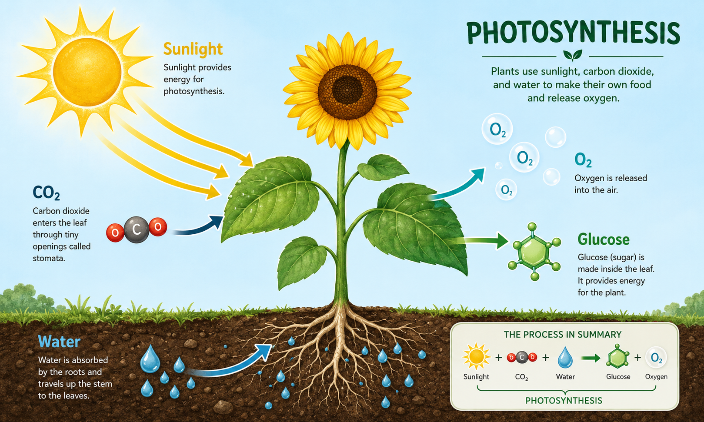

小葵体检状态
光合作用是什么？

相关词汇
光合作用的两个阶段
光反应：捕获光能，制造"能量货币"
场所：叶绿体类囊体膜上。叶绿素分子吸收红光（680nm）和远红光（700nm），激发的电子经电子传递链（ETC）传递，驱动ATP合酶合成ATP，同时NADP⁺被还原为NADPH。水的光解（2H₂O → 4H⁺ + 4e⁻ + O₂）提供电子并释放氧气。
污染影响：重金属（Cd、Cu）特异性攻击光系统II（PSII）的放氧复合体，电子传递速率可下降30-70%。O₃损伤类囊体膜结构，使光化学效率Fv/Fm降低0.05-0.08。PM2.5遮光效应使到达叶面的光合有效辐射（PAR）降低15-40%，直接削弱光反应的驱动力。
暗反应（Calvin循环）：用"能量货币"固定CO₂
场所：叶绿体基质中。Rubisco酶催化CO₂与RuBP结合（CO₂固定），生成3-磷酸甘油酸，再利用光反应提供的ATP和NADPH将其还原为G3P（三碳糖），最终合成葡萄糖。每固定1分子CO₂需要消耗3分子ATP和2分子NADPH。
污染影响：SO₂和NOₓ直接降低Rubisco羧化活性；O₃使Rubisco含量下降20-50%，同时抑制其大亚基和小亚基基因表达。O₃浓度80 ppb时，水稻Rubisco活性下降35%。气孔关闭导致胞内CO₂浓度（Ci）降低，Rubisco转而催化O₂与RuBP结合（光呼吸），浪费已捕获的光能，净光合效率进一步下降。
级联效应：从光反应到暗反应的连锁崩溃
污染对光合作用的伤害不是孤立的，而是级联崩溃：PSII受损 → 电子传递受阻 → NADPH和ATP生成减少 → 暗反应缺乏能量和还原力 → Rubisco催化的CO₂固定下降 → 有机物合成减少 → 植物生长受阻 → 根系获得的同化产物减少 → 根系进一步衰弱 → 吸收水分养分更少 → 恶性循环。这就是为什么污染环境下，植物的光合效率会从90%骤降至35%——不是单一因素，而是整个系统的连锁崩塌。
光合能量对比
为什么光合能量下降了？
叶片损伤
叶片是光合作用的主要场所。污染造成的叶片斑点、黄化减少了有效光合面积。坏死斑点区域完全丧失光合功能，黄化区域叶绿素含量降低导致光能捕获效率下降。当叶片受损面积超过30%时，植物几乎无法维持正常生长所需的光合产物。
叶绿素减少
叶绿素是吸收光能的关键物质。SO₂抑制叶绿素合成关键酶（ALAD），O₃加速叶绿素降解，重金属干扰镁和铁的吸收（镁是叶绿素分子的核心原子，铁是叶绿素合成必需的辅因子）。SO₂暴露可使叶绿素含量下降15-25%，镉胁迫下叶绿素a/b比值显著降低。
根系吸水下降
水是光合作用的原料之一——光反应中水的光解产生电子和质子，是整个光合电子传递链的起点。根系受损导致水分供应不足，气孔为减少失水而关闭，但代价是CO₂无法进入，暗反应受限。同时，水分胁迫下植物产生过量脱落酸（ABA），进一步促进气孔关闭，形成正反馈恶性循环。
气孔交换受影响
叶片气孔是气体交换的通道。PM2.5颗粒物物理堵塞气孔开口，气孔导度可下降20-40%。O₃进入气孔后直接损伤保卫细胞，影响气孔开闭调节功能。气孔受阻导致胞间CO₂浓度降低，Rubisco酶转而催化光呼吸（O₂与RuBP结合），浪费25-30%的已捕获光能，净光合效率大幅下降。